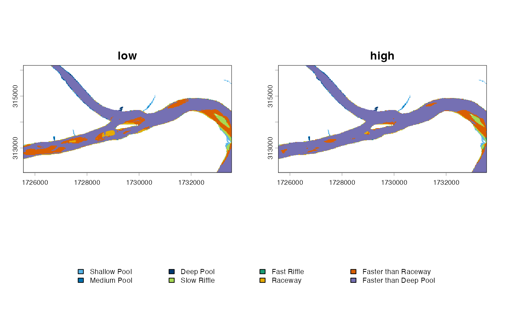
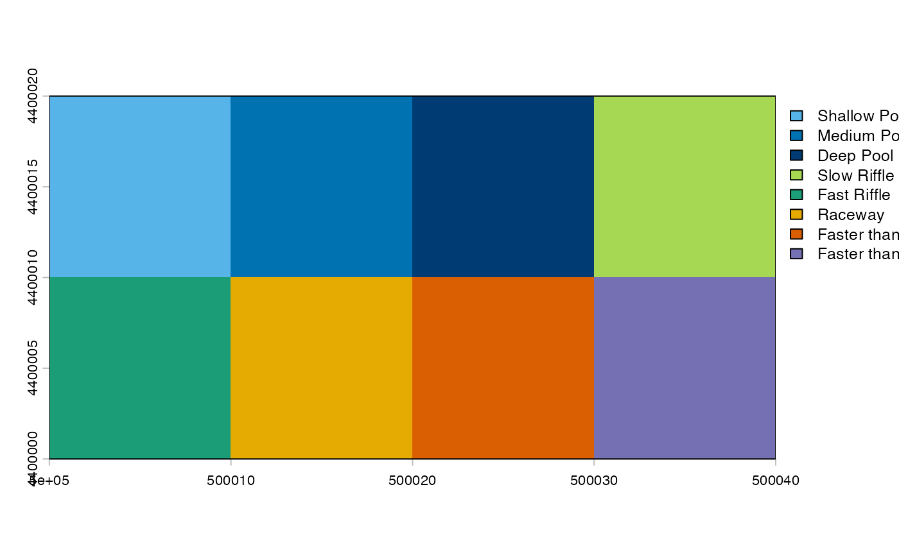

library(hydromeso)
h <- mesohabitat_example_rasters()
d2 <- h$depth * 1.25
v2 <- h$velocity * 1.15
depth <- list(low = h$depth, high = d2)
velocity <- list(low = h$velocity, high = v2)Unique names pair dates or discharges safely. Unmatched or duplicated names are rejected. Positional pairing is available only when explicitly requested.
scenarios <- classify_mesohabitat_series(depth, velocity)
summarize_mesohabitat(scenarios)## scenario class_id label cell_count area_m2 hectares
## 1 low 1 Shallow Pool 470 14148.535 1.4148535
## 2 low 2 Medium Pool 205 6171.170 0.6171170
## 3 low 3 Deep Pool 130 3913.425 0.3913425
## 4 low 4 Slow Riffle 823 24774.986 2.4774986
## 5 low 5 Fast Riffle 115 3461.876 0.3461876
## 6 low 6 Raceway 1036 31186.982 3.1186982
## 7 low 7 Faster than Raceway 3951 118937.996 11.8937996
## 8 low 8 Faster than Deep Pool 14604 439628.086 43.9628086
## 9 high 1 Shallow Pool 363 10927.485 1.0927485
## 10 high 2 Medium Pool 164 4936.936 0.4936936
## 11 high 3 Deep Pool 119 3582.289 0.3582289
## 12 high 4 Slow Riffle 617 18573.714 1.8573714
## 13 high 5 Fast Riffle 128 3853.218 0.3853218
## 14 high 6 Raceway 475 14299.051 1.4299051
## 15 high 7 Faster than Raceway 1884 56714.550 5.6714550
## 16 high 8 Faster than Deep Pool 17584 529335.813 52.9335813
## square_kilometres acres percentage
## 1 0.014148535 3.4961791 2.2030562
## 2 0.006171170 1.5249293 0.9609076
## 3 0.003913425 0.9670284 0.6093560
## 4 0.024774986 6.1220325 3.8576918
## 5 0.003461876 0.8554481 0.5390457
## 6 0.031186982 7.7064710 4.8560981
## 7 0.118937996 29.3902190 18.5197332
## 8 0.439628086 108.6344659 68.4541114
## 9 0.010927485 2.7002405 1.7015094
## 10 0.004936936 1.2199435 0.7687261
## 11 0.003582289 0.8852029 0.5577951
## 12 0.018573714 4.5896647 2.8920970
## 13 0.003853218 0.9521509 0.5999812
## 14 0.014299051 3.5333724 2.2264929
## 15 0.056714550 14.0144706 8.8309739
## 16 0.529335813 130.8017279 82.4224244
plot_mesohabitat(scenarios)
The following operation takes median depth and median velocity first and then classifies those two surfaces:
median_result <- mesohabitat_from_median_hydraulics(depth, velocity)
names(median_result)## [1] "median_depth" "median_velocity"
## [3] "mesohabitat_from_median_hydraulics"
plot_mesohabitat(median_result$mesohabitat_from_median_hydraulics)
This is mesohabitat derived from median hydraulics, not “median
mesohabitat.” The modal nominal class is a different operation. Ties can
return NA or the lowest class identifier as a deterministic
identifier-only convention.
modal_mesohabitat(scenarios, ties = "NA")## class : SpatRaster
## size : 230, 445, 1 (nrow, ncol, nlyr)
## resolution : 18, 18 (x, y)
## extent : 1725550, 1733560, 312049.5, 316189.5 (xmin, xmax, ymin, ymax)
## coord. ref. : +proj=lcc +lat_0=38.3333333333333 +lon_0=-98 +lat_1=38.7166666666667 +lat_2=39.7833333333333 +x_0=400000 +y_0=0 +ellps=GRS80 +units=us-ft +no_defs
## source(s) : memory
## categories : mesohabitat
## name : modal_mesohabitat
## min value : Shallow Pool
## max value : Faster than Deep Pool
compare_mesohabitat(scenarios[[1]], scenarios[[2]])## $transitions
## from_class to_class cell_count area_m2
## 1 1 1 363 10927.4855
## 2 1 2 41 1234.2340
## 3 1 4 60 1806.1959
## 4 1 6 6 180.6196
## 5 2 2 123 3702.7020
## 6 2 3 32 963.3046
## 7 2 6 33 993.4078
## 8 2 8 17 511.7556
## 9 3 3 87 2618.9844
## 10 3 8 43 1294.4406
## 11 4 4 557 16767.5182
## 12 4 5 60 1806.1959
## 13 4 6 114 3431.7721
## 14 4 7 92 2769.5003
## 15 5 5 68 2047.0220
## 16 5 7 47 1414.8535
## 17 6 6 322 9693.2511
## 18 6 7 260 7826.8487
## 19 6 8 454 13666.8818
## 20 7 7 1485 44703.3478
## 21 7 8 2466 74234.6486
## 22 8 8 14604 439628.0860
##
## $gains
## class_id area_m2
## 1 1 0.0000
## 2 2 1234.2340
## 3 3 963.3046
## 4 4 1806.1959
## 5 5 1806.1959
## 6 6 4605.7995
## 7 7 12011.2025
## 8 8 89707.7265
##
## $losses
## class_id area_m2
## 1 1 3221.049
## 2 2 2468.468
## 3 3 1294.441
## 4 4 8007.468
## 5 5 1414.853
## 6 6 21493.730
## 7 7 74234.649
## 8 8 0.000
##
## $unchanged_area_m2
## [1] 530088.4
##
## $percentage_changed
## [1] 17.46039